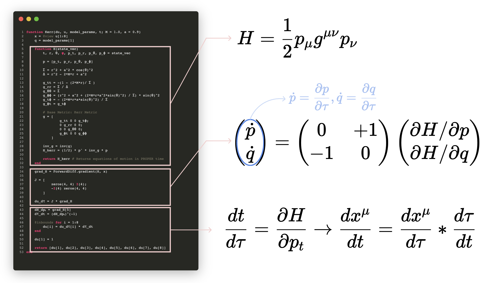

Numerical Kludge Scheme
To calculate the gravitational waveform for a Kerr geodesic, we need a function which can:
function Compute_Gravitational_Wave(Geodesic, Observer)
return h+, hx
endAs a first check, we must ensure that we are in the correct temporal coordinates. For Kerr geodesics, there are not one, not two, but three possible temporal variables!: Proper Time, Coordinate Time, and Mino Time.
To ensure that we are in Coordinate Time, we return to our geodesic equations of motion, which are calculated in the Kerr() function:
function Kerr(du, u, model_params, t; M = 1.0, a = 0.9)
x = @view u[1:8]
q = model_params[1]
function H(state_vec)
t, r, θ, φ, p_t, p_r, p_θ, p_ϕ = state_vec
p = [p_t, p_r, p_θ, p_ϕ]
Σ = r^2 + a^2 * cos(θ)^2
Δ = r^2 - 2*M*r + a^2
g_tt = -(1 - (2*M*r)/ Σ )
g_rr = Σ / Δ
g_θθ = Σ
g_ϕϕ = (r^2 + a^2 + (2*M*r*a^2*sin(θ)^2) / Σ) * sin(θ)^2
g_tϕ = - (2*M*r*a*sin(θ)^2) / Σ
g_ϕt = g_tϕ
# Base Metric: Kerr Metric
g = [
g_tt 0 0 g_tϕ;
0 g_rr 0 0;
0 0 g_θθ 0;
g_ϕt 0 0 g_ϕϕ
]
inv_g = inv(g)
H_kerr = (1/2) * p' * inv_g * p
return H_kerr # Returns equations of motion in PROPER time
end
grad_H = ForwardDiff.gradient(H, x)
J = [
zeros(4, 4) I(4);
-I(4) zeros(4, 4)
]
Conservative = J * grad_H
du_dτ = Conservative
dH_dpₜ = grad_H[5]
dτ_dt = (dH_dpₜ)^(-1)
@inbounds for i = 1:8
du[i] = du_dτ[i] * dτ_dt
end
du[1] = 1
return [du[1], du[2], du[3], du[4], du[5], du[6], du[7], du[8]]
endThis can be a lot to look at at first sight, so here's a diagram summarizing the main components of this function, which returns 8 equations of motion for Kerr geodesics:

The essential idea is as follows: First, we form the hamiltonian via
\[H = \frac{1}{2}p_{\mu}g^{\mu\nu}p_{\nu}\]
Then, we can use Hamilton's equations of motion:
\[\dot q = \frac{\partial H}{\partial p}, \dot p = - \frac{\partial H}{\partial q}\]
If we write this in matrix form, it looks like:
\[\begin{pmatrix} \dot p \\ \dot q \end{pmatrix} = \begin{pmatrix} 0 & +1 \\ -1 & 0 \end{pmatrix} \begin{pmatrix} \partial H/\partial p \\ \partial H/\partial q \end{pmatrix}\]
Canonically, these time derivates are in terms of proper time:
\[\dot p = \frac{\partial p}{\partial \tau},\dot q = \frac{\partial q}{\partial \tau}\]
To convert these to coordinate time, we use the chain rule:
\[\dot t = \frac{\partial H}{\partial p_t}\]
That means
\[\dot t = \frac{dt}{d\tau} = \frac{\partial H}{\partial p_t}\]
Thus, in terms of coordinate time, the equations of motion are:
\[\frac{dx^{\mu}}{dt}=\frac{dx^{\mu}}{d\tau}*\frac{d\tau}{dt}\]
Great! With this in order, we turn to the orbit-to-waveform mapping. We will employ the so-called "Numerical Kludge" formalism, which uses the Quadrupole approximation (in the original paper, the Quadrupole-Octope approximation or Press formula are also tested).
function Compute_Gravitational_Wave(Geodesic, Observer)
return h+, hx
endTo implement this formalism, we have the following steps:
Boyer-Lindquist to Cartesian Coordinates
- Convert the Kerr geodesic from $(r, \theta, \phi)$ to $(x, y, z)$ coordinates. There are technically two ways to convert: a oblate-spheroidal transformation and a spherical-coordinates transformation. In the original NK paper, a simple spherical coordinate transformation is used, which is why we opt for the latter.
function BoyerLindquist_to_Cartesian(r, θ, ϕ; a)
x = @. r * sin(θ) * cos(ϕ)
y = @. r * sin(θ) * sin(ϕ)
z = @. r * cos(θ)
return x, y, z
end
function Soln_to_Source(soln; a)
t = soln[1, :]
r = soln[2, :]
θ = soln[3, :]
ϕ = soln[4, :]
x, y, z = BoyerLindquist_to_Cartesian(r, θ, ϕ; a = a)
orbit = [x'; y'; z']
return t, orbit
endCalculate Quadrupole Tensor
- The Quadrupole Tensor is calculated as $Q = \mu \left(x_i x_j - \frac{1}{3}\delta_{ij} * r^2 \right)$
function Calculate_Quadrupole_Tensor(orbit; μ = 1.0)
N = size(orbit, 2)
Q = zeros(3, 3, N)
for k in 1:N
x = orbit[:, k]
r2 = dot(x, x)
for i in 1:3, j in 1:3
δij = (i == j) ? 1.0 : 0.0
Q[i, j, k] = μ * (x[i] * x[j] - (1/3)*δij*r2)
end
end
return Q
endTake Second Derivative of Quadrupole Tensor
- A second derivative stencil was implemented by Prof. Keith from the paper "Generation of finite difference formulas on arbitrarily spaced grids"
function Calculate_Q_ddot(Q, dt)
Qdd = similar(Q)
for i in 1:3, j in 1:3
Qdd[i, j, :] .= d2_dt2(vec(Q[i, j, :]), dt)
end
return Qdd
endProject to Observer
- We define a unit vector from the center of the central massive black hole to the observer. On the observer plane, polarization bases vectors $\hat p$ and $\hat q$ are defined such that $\hat p \perpto \hat q \perpto \hat n$
function Observer_Basis(θ_obs, ϕ_obs)
# Direction to observer
n = [
sin(θ_obs) * cos(ϕ_obs),
sin(θ_obs) * sin(ϕ_obs),
cos(θ_obs)
]
# Polarization basis vectors (p,q) on observer sky
p = [
cos(θ_obs) * cos(ϕ_obs),
cos(θ_obs) * sin(ϕ_obs),
-sin(θ_obs)
]
q = [
-sin(ϕ_obs),
cos(ϕ_obs),
0.0
]
return n, p, q
endCompute $h_+$ and $h_\times$
- We compute $h_+$ in terms of the polarization bases vectors as $h_+ = (p_i * p_j - q_i * q_j) * H_{ij}$
- We compute $h_\times$ in terms of the polarization bases vectors as $h_\times = (p_i * q_j + q_i * p_j) * H_{ij}$
function Compute_h₊_hₓ(Qdd; θ_obs = 0.0, ϕ_obs = 0.0, D = 1.0)
_, p, q = Observer_Basis(θ_obs, ϕ_obs)
N = size(Qdd, 3)
h₊ = zeros(N)
hₓ = zeros(N)
for k in 1:N
H = (2/D) .* Qdd[:, :, k]
h₊[k] = sum(
(p[i] * p[j] - q[i] * q[j]) * H[i, j]
for i in 1:3, j in 1:3
)
hₓ[k] = sum(
(p[i] * q[j] + q[i] * p[j]) * H[i, j]
for i in 1:3, j in 1:3
)
end
return h₊, hₓ
endTo summarize, we implement everything in a single small function nk_quadrupole_waveform, which takes as input our geodesic soln, the spin of the central black hole a, the mass of the smaller black hole μ = 1.0, and the location of the observer θ_obs = 0.0, ϕ_obs = 0.0, D = 1.0:
function nk_quadrupole_waveform(soln; a, μ = 1.0, θ_obs = 0.0, ϕ_obs = 0.0, D = 1.0)
t, orbit = Soln_to_Source(soln; a = a)
dt = assert_uniform_time(t)
Q = Calculate_Quadrupole_Tensor(orbit; μ = μ)
Q̇̇ = Calculate_Q_ddot(Q, dt)
h₊, hₓ = Compute_h₊_hₓ(Q̇̇; θ_obs = θ_obs, ϕ_obs = ϕ_obs, D = D)
return t, h₊, hₓ, Q, Q̇̇
end In practice, we use this function simply as follows:
t, h₊, hₓ, Q, Qdd = nk_quadrupole_waveform(true_solution; a = 0.9, μ = 1.0, θ_obs = 0.0, ϕ_obs = 0.0, D = 1.0)It's worth running a few sanity checks to ensure our waveform generation scheme makes sense:
- Quadrupole Tensor is STF: Symmetric & Trace-Free
- Face-On Projection Check ($\theta_{obs}=0, \phi_{obs}=0$)
- Circular, Equatorial Orbit Gravitational Waveform
- Periapsis Radiation Burst Check
- Varying Observer Inclination for Circular, Equatorial Orbit
What is the first check about? The Quadrupole Tensor is defined as:
\[Q_{ij} = I_{ij} - \frac{1}{3}\delta_{ij}I_{kk}\]
where $I_{kk} = I_{xx} + I_{yy} + I_{zz}$ is the trace and $\delta_{ij}$ turns on the trace subtraction only for diagonal entries:
\[ \begin{pmatrix} I_{xx} - \frac{1}{3}(I_{xx} + I_{yy} + I_{zz}) & I_{xy} & I_{xz} \\ I_{yx} & I_{yy} - \frac{1}{3}(I_{xx} + I_{yy} + I_{zz}) & I_{yz} \\ I_{zx} & I_{yy} & I_{zz} - \frac{1}{3}(I_{xx} + I_{yy} + I_{zz}) \\ \end{pmatrix} $$ To check that the Quadrupole and its second derivative is STF, we do: !!! details "Quadrupole Tensor Sanity Checks" To calculate the trace, we simply take: $$tr[Q] = Q_{xx}+Q_{yy}+Q_{zz}\]
In practice, of course, there will be not one quadrupole tensor, but -- if you have, say, 5000 time steps -- _5000_ quadrupole tensors, each evaluated at a given time step:
$$tr[Q(t_i)] = Q_{xx}(t_i)+Q_{yy}(t_i)+Q_{zz}(t_i)$$
$Q$, the quadrupole tensor, is usually a 3x3 matrix. We keep track of the $k$-th timestep of $Q$ via `Q[i,j,k]` where `i,j` run over the $x,y,z$ coordinates, and $k$ runs from 1 to 5000 (because there are 5000 time steps from $t_i$ to $t_f$ in the simulation). The method `size(Q,3)` returns the size of the 3rd dimension of the tensor $Q$, which in this case is 5000. In general, the `size(A,i)` method returns the size of the $i$-th dimension of the tensor $A$.
`trQ = [Q[1,1,k] + Q[2,2,k] + Q[3,3,k] for k in 1:N]`
Thus, the trace of the quadrupole tensor is calculated as `trQ = [Q[1,1,k] + Q[2,2,k] + Q[3,3,k] for k in 1:N]`. To check that the tensor is symmetric, the `permutedims()` method is used, which calculates the transpose of a matrix. For instance, `permutedims(A, (2,1))` flips the 2nd and 1st axes of the $A$ tensor (exchanges the rows and columns) to give the transpose. In the case below, we employ `permutedims(Q, (2,1,3))` to swap the rows and columns of $Q$ whilst keeping the 3rd axes intact.
```julia
function tensor_sanity_checks(Q, Qdd)
N = size(Q, 3)
trQ = [Q[1,1,k] + Q[2,2,k] + Q[3,3,k] for k in 1:N]
trQdd = [Qdd[1,1,k] + Qdd[2,2,k] + Qdd[3,3,k] for k in 1:N]
symQ = maximum(abs.(Q .- permutedims(Q, (2,1,3))))
symQdd = maximum(abs.(Qdd .- permutedims(Qdd, (2,1,3))))
println("max |tr(Q)| = ", maximum(abs.(trQ)))
println("max |tr(Qdd)| = ", maximum(abs.(trQdd)))
println("max |Q-Qᵀ| = ", symQ)
println("max |Qdd-Qddᵀ|= ", symQdd)
end
```For our next sanity check, we would like to ensure that the gravitational waveform reproduces a known equation:
Z-Axis Observer Radiation
For an observer on the z-axis, we have the following observer frame:
\[\hat p = (1,0,0), \hat q = (0, 1, 0), \hat n = (0, 0, 1)\]
Employing the relation:
\[h_+ = \Sigma_{i=1}^{3} \Sigma_{j=1}^{3} (p_i p_j - q_i q_j) * h_{ij}\]
We can expand this as follows:
\[h_+ = (p_x p_x - q_x q_x) h_{xx} + (p_x p_y - q_x q_y) h_{xy} + (p_x p_z - q_x q_z) h_{xz} + (p_y p_x - q_y q_x) h_{yx} + (p_y p_y - q_y q_y) h_{yy} + (p_y p_z - q_y q_z) h_{yz} + (q_z p_x - q_z q_x) h_{zx} + (p_z p_y - q_z q_y) h_{zy} + (p_z p_z - q_z q_z) h_{zz}\]
Clearly, neither $p$ nor $q$ has a $z$-component, so there will be no radiation detected in the z-direction, and we find (after plugging in that $p_x = 1$ and $q_y = 1$) that
\[h_+ = h_{xx} - h_{yy}\]
cxv